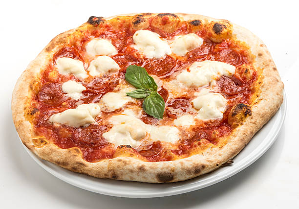

Pizza recipe

Description
Pizza is a culinary preparation that consists of a flat bread, usually circular in shape, made with wheat flour, yeast, water and salt that is traditionally covered with tomato sauce and mozzarella and baked at a high temperature in a wood-fired oven.
Ingredients
- 1 ½ cups warm water, 105-110 degrees F
- 1 envelope rapid rise yeast
- 1 tablespoon honey
- 1 ½ teaspoons kosher salt
- 1 ¼ cups white whole wheat flour
- 2 tablespoons olive oil
- 2 ½ cups all-purpose flour, plus more, as needed
How to make a Pizza
- Combine water, yeast, honey and salt in a small bowl; let stand until foamy, about 3-5 minutes.
- In the bowl of an electric mixer fitted with dough attachment, beat white whole wheat flour, olive oil and water mixture at medium speed until well combined.
- Lightly oil a large bowl or coat with nonstick spray; place dough in bowl, turning to coat. Cover with a clean dishtowel and let stand at room temperature until dough has doubled in size, 30-45 minutes.
- Working on a lightly floured surface, divide into 2 equal pieces*; gently knead before using.
Back home page